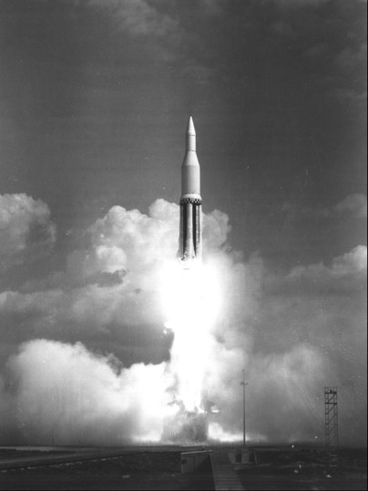
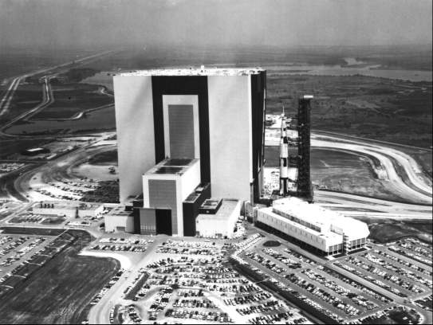
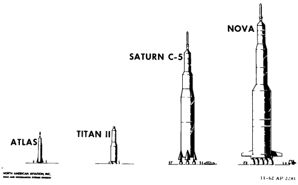
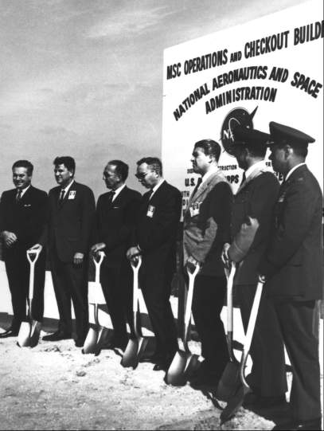

Late in September 1961, Webb announced a major reorganization of NASA, effective 1 November. Technical issues had to be resolved and leadership to be improved. Committees - no matter how many - could study problems and recommend solutions, but they could not make decisions or run a program.
Webb, Dryden, and Seamans had scoured the country for the right man to take charge of the Office of Manned Space Flight and Apollo. On 21 September, Webb appointed D. Brainerd Holmes as Director of OMSF, to head all manned space flight activity for Headquarters. Three days later, the Administrator announced a major shakeup at NASA's top levels that saw Silverstein return to Cleveland as Director of the Lewis Research Center.
Holmes was an electrical engineer who had been project manager for the ballistic missile early warning system across the Arctic Circle. He came to NASA from the Radio Corporation of America's Major Defense Systems Division. Webb and Holmes intended for Headquarters to take a larger part in Apollo than it had in Mercury. To strengthen this position, they hired Joseph F. Shea, from Space Technology Laboratories, Inc., as Holmes' deputy, to concentrate on systems engineering.
Apollo's acceleration brought an administrative change for the Space Task Group, in addition to the physical move from Virginia to Texas. Redesignated the Manned Spacecraft Center, it dropped its one-program image as a task force for Mercury and assumed its role as the center for all manned space flight programs. Gilruth continued as Director.62
By November 1961, then, the agency had been reorganized to conduct the program more efficiently; sites and facilities had been identified to build, check out, support, and launch the lunar vehicles; and contracts had been awarded for the command section of the spacecraft, the guidance and navigation system, and various engines and stages of the launch vehicle. Much of the Apollo puzzle had been pieced together, but the principal questions of booster configuration and mission mode were still unanswered, although there were hopes for a solution in the near future.

Maiden launch of the Apollo program: Saturn SA-1 from Cape Canaveral, 27 October 1961.
On 27 October, the engine cluster concept of launch vehicle stages was successfully demonstrated. A little after 10 in the morning, the eight barrels of the Saturn C-1 spewed flames as the booster lifted off from Cape Canaveral. This maiden launch of the program, carrying only dummy stages filled with water, augured well for a successful flight test program and for Apollo in general, but the 5.8 million newtons (1.3 million pounds) of thrust generated was far short of that needed to get men to the moon and back safely.63
On 6 November, Milton Rosen (now NASA Director of Launch Vehicles and Propulsion told Seamans and Holmes that he was setting up another special in-house committee to try to pin down the large launch vehicle development program. Although he admitted that he would be repeating much of the work of Golovin's Large Launch Vehicle Planning Group, Seamans and Holmes encouraged Rosen to proceed, hoping this committee might produce some tangible results.
The committee members* came almost entirely from Rosen's office. Noticeably lacking were spacecraft people, with only John Disher to represent them until David Hammock, of Gilruth's center, belatedly joined the group. The team examined specific areas - problems of orbital rendezvous, configuration of the advanced Saturn, plans for Nova, future potential of solid-fueled rocket motor development, and NASA's possible use for the Defense Department's Titan III.#source64``64
Rosen's committee spent most of its two weeks of concentrated effort closeted in a motel room in Huntsville, near the Marshall center.65 But, when Rosen reported to Holmes on 20 November, he had to concede that there were still differences within the committee on rendezvous versus direct flight and on solid versus liquid motors. He nonetheless contended that the group as a whole was in accord:
We took the view that the Golovin Committee had opened doors to a room which should be explored in order to formulate a program. Our report consists of a finer cut of the Golovin recommendations - it is more specific with regard to the content and emphasis of a program.66
The Rosen Committee concluded that rendezvous (preferably a single operational maneuver) could be performed in either earth or lunar orbit, but the latter had the advantages of a single Saturn launch from the earth, using the C-4 or C-5, and a smaller, specially designed landing craft. A missed rendezvous, however, would prove fatal in lunar orbit. Moreover, the lunar lander, or ferry, which could place only a small payload on the moon, would permit a very limited staytime and would restrict the amount of scientific equipment that could be carried to the lunar surface. Although his group found earth orbit, where a missed rendezvous would mean only an aborted mission, more attractive, Rosen said, there was as yet no way of judging its difficulties or of estimating realistic schedules for development of docking and refueling techniques.
By this time, NASA officials in many quarters viewed the advanced Saturn as having at least four F-1 engines in its first stage. Rosen, convinced that NASA must build the biggest booster possible, recommended sliding a fifth engine in at the junction of two very strong crossbeams that supported the other four engines, With this extra power, he later said, either rendezvous mode - earth or lunar orbit - was possible.
Actually, Rosen himself favored direct flight; he believed it was a safer and surer way to reach the moon within the decade. He recommended the development of a Nova with eight F-1 engines in the first stage, which would be no more difficult, technically, than a five-engined Saturn.
Rosen's group opposed large solid-fueled rockets for manned lunar landing. There were too many technical problems to ensure a reasonable degree of reliability. Since the liquid-fueled F-1 and J-2 engines would be built for the Saturn C-5 anyway, why not use them in the Nova? The S-IVB stage should be used for the third stage of both the C-5 and Nova.67

Kennedy Space Center's Vehicle Assembly Building (above; earlier called the Vertical Assembly Building) stands high on Florida's Atlantic coast; the Saturn 500-F launch vehicle rides on a mobile crawler toward the launch pad in the 1966 photo.
On 4 December 1961, Holmes learned that Seamans essentially agreed with the committee's recommendations.68 Later in the month, Holmes established the Manned Space Flight Management Council - composed of himself, his principal subordinates at Headquarters, and senior officials from the manned space flight centers** - to set high-level policy for all manned space activities.69 At its first meeting, on 21 December, the council voted to develop the Saturn C-5.70
Early in January 1962, Holmes prepared a preliminary plan for the super-Saturn. He urged Seamans to release some of the money that had been authorized for an advanced Saturn, since negotiations with the three prospective contractors*** were being delayed by the indefinite status of 1962 funding.71 In deciding on the C-5, the planners endowed the Apollo launch vehicle with flexibility. It could serve as the booster for earth-orbit, circumlunar, and lunar-orbit missions. By launching two C-5s, a lunar landing could be made by earth-orbit rendezvous. And the C-5 seemed the best vehicle for the lunar-orbit rendezvous mode as well.72

Comparative sizes of manned space flight launch vehicles: Atlas for Mercury earth-orbital flight; Titan II for Gemini earth-orbital flight to perfect rendezvous procedures and study long-duration flight; Saturn C-5 chosen for Apollo; Nova, which would have been required for a direct flight landing on the moon.
At the end of 1961, however, it was tacitly assumed at NASA Headquarters that the mode would be earth-orbit rendezvous. There was no distinct break, no real dividing line, marking the drift away from direct flight; the shift was so gradual that Seamans was unaware of the full import of changed feelings within the Office of Manned Space Flight and the field centers. "My own recollection is that we really kept both the direct ascent and the Earth orbit rendezvous as real possibilities," he later commented.73
Paralleling the switch to earth-orbit rendezvous, with direct flight as a backup, was the broadening realization also that the physical and financial realities of designing, building, and testing both the C-5 and Nova, almost concurrently, were perhaps beyond NASA's - and the country's - economic ability.74

Modules of the Apollo spacecraft were tested in Florida in the Manned Spacecraft Operations Building. Above, NASA officials Walt Williams, Merritt Preston, Kurt Debus, Brainerd Holmes, and Wernher von Braun - assisted by Col. E. Richardson (Air Force and Col. H. R. Parfitt (Army Corps of Engineers) - are ready to spade dirt, to mark the beginning of construction of the building in January 1963.
When Holmes became chief of NASA's manned programs, he had been confronted with two pressing technical problems - mission approach and the launch vehicle for Apollo. Within a few weeks the management council had settled the vehicle configuration. Holmes then assigned Joseph Shea to investigate the mode question further.75 Although earth-orbit rendezvous was gaining ground in Washington, the devotees of direct flight were not giving in easily. And in the field elements things were no better: Marshall was united on earth-orbit rendezvous, but the Manned Spacecraft Center was split between direct flight and lunar-orbit rendezvous. Actually, the mode issue had smoldered almost from the day NASA opened for business, creating camps that favored one route or another and raising passions of individual promoters to the point of conducting evangelical missions to gather converts. The next chapter explores some of the deep-seated prejudices.
* The committee consisted of Milton Rosen, Richard B. Canright, Eldon Hall, Elliott Mitchell, Norman Rafel, Melvin Savage, Adelbert O. Tischler, and John Disher (from Heatiquarters); William A. Mrasek, Hans H. Mans, and James B. Bramfet (Marshall); and David M. Hammock (Manned Spacecraft Center).
** The Management Council comprised Holmes, Low, Rosen, Charles H. Roadman, William E. Lilly, and Joseph F. Shea (Headquarters); von Braun and Eberhard F. M. Rees (Marshall); and Gilruth and Walter C. Williams (Manned Spacecraft Center).
*** The three were Boeing, first stage; North American, second stage; and Douglas, third (S-IVB) stage.
62. House Committee on Science and Astronautics, Aeronautical and Astronautical Events of 1961, pp. 48-49, 77; Senate Committee on Aeronautical and Space Sciences, NASA Authorization for Fiscal Year 1963: Hearings on H.R. 11737, 87th Cong., 2nd sess., 1962, pp. 368-69; Seamans to D. Brainerd Holmes, 25 Oct. 1961; MSC, "Designation of STG as 'Manned Spacecraft Center,'" Announcement 2, 1 Nov. 1961.
63. Akens et al., "History of Marshall from July 1 to December 31, 1961," pp. 26-27.
64. Milton W. Rosen to Holmes, "Large Launch Vehicle Program," 6 Nov. 1961, and "Recommendations for NASA Manned Space Flight Vehicle Program," 20 Nov. 1961, with enc., "Report of Combined Working Group on Vehicles for Manned Space Flight"; Rosen, interview, Washington, 15 Sept. 1966.
65. Rosen interview.
66. Rosen memo, 20 Nov. 1961.
67. Rosen memo enc., "Report of Combined Working Group on Vehicles"; [Barton C. Hacker], notes on interview with Rosen, Washington, 14 Nov. 1969.
68. Seamans to Holmes, "Recommendations for NASA Manned Space Flight Vehicle Program," 4 Dec. 1961.
69. Rosholt, Administrative History, pp. 274-75.
70. Minutes, meeting of the Manned Space Flight Management Council, 21 Dec. 1961.
71. Holmes to Seamans, "Advanced Saturn Preliminary Project Development Plan," 11 Jan. 1962, with enc.
72. Walter C. Williams, interview, EI Segundo, 27 Jan. 1970.
73. Low interview.
74. Seamans, interview, Washington, 11 July 1969.
75. Joseph F. Shea, interview, Washington, 6 May 1970.